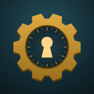

Política de privacidad de Clave Mecánica
Última actualización: 16 de noviembre de 2026
Resumen
Clave Mecánica no recoge, no envía y no comparte ningún dato personal. No tiene cuentas de usuario, ni publicidad, ni analíticas, ni rastreadores de terceros. Funciona completamente sin conexión.
Qué se guarda y dónde
Para que puedas seguir jugando, la app guarda en la memoria interna de tu propio dispositivo:
- El nombre que escribes para jugar (solo se muestra en pantalla).
- La partida en curso, tus notas y tus preferencias (dificultad, sonido, tutorial visto).
- El resultado del reto del día y tu racha.
Estos datos nunca salen de tu dispositivo. Se borran al desinstalar la app o al borrar sus datos desde los ajustes del sistema.
Permisos
La app no pide acceso a tu ubicación, contactos, cámara, micrófono, fotos ni archivos. Solo usa la vibración del dispositivo para avisarte en algunas jugadas.
Menores
Clave Mecánica es apta para todos los públicos. Como no recoge ningún dato, tampoco recoge datos de menores.
Cambios en esta política
Si en una versión futura se añade alguna función que necesite datos (por ejemplo, partidas online), esta página se actualizará antes de publicarla y la app lo explicará con claridad.
Contacto
Para cualquier duda sobre esta política escribe a: CORREO_DE_CONTACTO